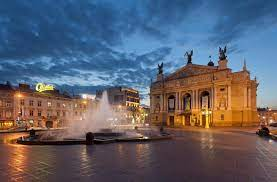

Львів — місто обласного значення в Україні, адміністративний центр Львівської області, Львівської агломерації, Львівського району, Львівської міської громади, національно-культурний та освітньо-науковий осередок країни, великий промисловий центр і транспортний вузол, вважається столицею Галичини та центром Західної України. За кількістю населення — сьоме місто країни (717 655 станом на 1 грудня 2021 року).
